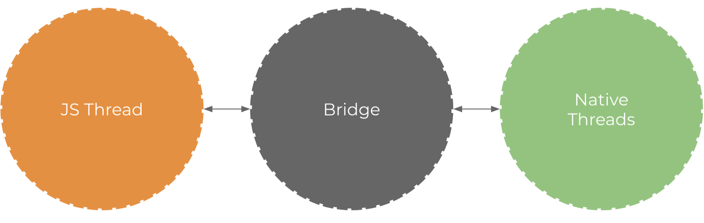

Workshop - ReactNative
Como sair da maldição do Hello World

Palestrante: Rogério Fontes / @rogeriofontes
Sobre o palestrante:
APAIXONADO EM MANEIRAS E FORMAS ÁGEIS DE CRIAR CÓDIGO FONTE. PROGRAMANDO SEMPRE TOMANDO UM BOM CAFÉ E ESCUTANDO UM BELO E PESADO ROCK`N ROLL. TRABALHA A MAIS DE 10 ANOS COM JAVA E LINUX, PASSANDO POR ANDROID, PYTHON, PHP E AGORA COM O CORAÇÃO NO ANGULAR.JS E NODE.JS. PROFESSOR UNIVERSITÁRIO DE REDES DE COMPUTADORES, JAVA E DISPOSITIVOS MÓVEIS. JUGLEADER E CO-FUNDADOR DO UAIJUG (GRUPO DE USUÁRIOS DO TRIÂNGULO MINEIRO) E DO TRIÂNGULO HACKERSPACE. ALÉM DISSO AVENTURANDO COMO EMPREENDEDOR E ARQUITETO MÓBILE EVERIS E APAIXONADO POR ESTUDOS MÚSICAIS.
Apresentar a estrutura - Everis
Porque React?
É uma biblioteca javascript para criar interfaces do Facebook e Instagram.
O React foi criado para resolver o problema: Criar largar aplicações com dados que mudam a cada segundo.
Virtual DOM:
https://programmingwithmosh.com/react/react-virtual-dom-explained/
O que o React Native faz?
O que o React Native faz? Basicamente, ao contrário de aplicações web, que se utilizam da DOM do navegador para representar os elementos na UI, ele irá realizar chamadas nativas — Objective-C para dispositivos iOS e JAVA para Android — a fim de renderizar estes elementos.
https://facebook.github.io/react-native/docs/getting-started.html
Como ele faz isso?
Usando Bridge bridge
Vantagens de uma solução nativa?
As principais vantagens de uma aplicação nativa sobre uma aplicação web mobile (ex: ionic) são:
Como ele faz isso?
Usando Bridge.
Quando usamos bridge?
Arquitetura:
Dispositivos ANDROID
JSCore virtual machine: Destinado ao nosso código JavaScript:
Android Runtime: Para o código Java/Kotlin
Dispositivos IOS
JSCore virtual machine: Destinado ao nosso código JavaScript:
Native Runtime: Para códigos Objective-C/Swift;
Theads

Existem também três importantes threads sendo executadas em uma aplicação React Native, fora as que normalmente já são executadas por aplicações nativas em background.
A primeira delas é a main thread, que também é utilizada por qualquer aplicação nativa. Ela é responsável por tratar as requisições relacionadas a renderização de elementos na tela e também pelos gestos reproduzidos pelo usuário.
A segunda é exclusiva ao React Native, responsável por executar o código JavaScript. O JavaScript é o responsável por toda lógica de negócio da aplicação. Além de definir a estrutura e as funcionalidades da nossa UI.
São os nós (nodes) que respondem de acordo com os dados recebidos, sejam estes dados tratados ou não.
E por último, a **Shadow Queue **que é a responsável pelos cálculos referentes ao layout.
Revisando: Aplicação React Native e Comunicação.
O que é estudar?.
Referências
- https://www.lambda3.com.br/2018/12/lambda3-podcast-122-react-native/;
- https://hipsters.tech/react-native-hipsters-148/;
- https://www.infoq.com/br/presentations/react-native-no-banco-do-brasil-como-rn-nos-faz-poupar-1500-horas-por-projeto/;
- https://www.schoolofnet.com/plano-de-estudo-react-native/;
- http://gabsferreira.com/airbnb-desiste-do-react-native/;
- https://www.opensoft.pt/portfolio-item/o-que-e-o-react-native/;
- https://www.facebook.com/notes/devmedia/instalando-react-native-no-seu-mac/1984382714939960/;
- https://developer.mozilla.org/en-US/docs/Web/CSS/CSS_Flexible_Box_Layout/Basic_Concepts_of_Flexbox;
- https://hackernoon.com/react-native-how-to-setup-your-first-app-a36c450a8a2f